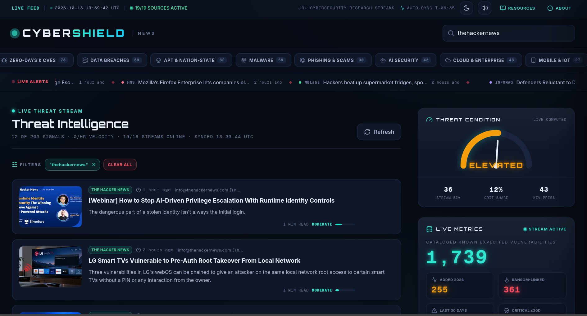
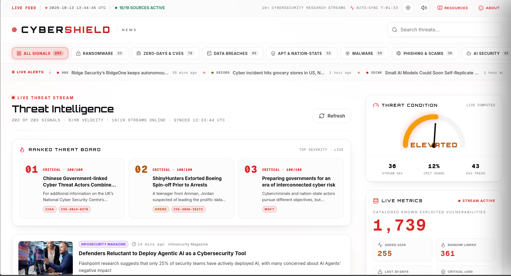

10 lane buttons with live counts re-scope wall, gauge and board in one click.
19/19 streams online — uncheck any outlet to exclude it from the stream instantly.


MALWARE ×54, EXPLOIT ×51, VULNERABILITY ×41 — the stream's living vocabulary.
Dark ops wall and a daylight-readable light theme, remembered per visitor.